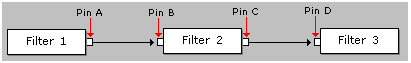

[The feature associated with this page, DirectShow, is a legacy feature. It has been superseded by MediaPlayer, IMFMediaEngine, and Audio/Video Capture in Media Foundation. Those features have been optimized for Windows 10 and Windows 11. Microsoft strongly recommends that new code use MediaPlayer, IMFMediaEngine and Audio/Video Capture in Media Foundation instead of DirectShow, when possible. Microsoft suggests that existing code that uses the legacy APIs be rewritten to use the new APIs if possible.]
In most DirectShow filters, pins cannot be reconnected while the graph is actively streaming data. The application must stop the graph before reconnecting the pins. However, some filters do support pin reconnections while the graph is running, a process known as dynamic reconnection. This can be done either by the application, or by a filter in the graph.
As an example, consider the graph in the following illustration.

One scenario for dynamic reconnection might be to remove Filter 2 from the graph, while the graph is running, and replace it with another filter. For this scenario to work, the following must be true:
The dynamic reconnection will involve the following steps:
Step 1. Block the Data Stream
To block the data stream, call IPinFlowControl::Block on pin A. This method can be called either asynchronously or synchronously. To call the method asynchronously, create a Win32 event object and pass the event handle to the Block method. The method will return immediately. Wait for the event to be signaled, using a function such as WaitForSingleObject. The pin signals the event when it has blocked the data flow. For example:
// Create an event
HANDLE hEvent = CreateEvent(NULL, FALSE, FALSE, NULL);
if (hEvent != NULL)
{
// Block the data flow.
hr = pFlowControl->Block(AM_PIN_FLOW_CONTROL_BLOCK, hEvent);
if (SUCCEEDED(hr))
{
// Wait for the pin to finish.
DWORD dwRes = WaitForSingleObject(hEvent, dwMilliseconds);
}
}
To call the method synchronously, simply pass the value NULL instead of the event handle. Now the method will block until the operation completes. This may not happen until the pin is ready to deliver a new sample. If the filter is paused, this can take an arbitrary length of time. Therefore, do not make the synchronous call from your main application thread. Use a worker thread, or else call the method asynchronously.
Step 2. Reconnect the Pins
To reconnect the pins, query the Filter Graph Manager for the IGraphConfig interface and call either IGraphConfig::Reconnect or IGraphConfig::Reconfigure. The Reconnect method is simpler to use; it does the following:
The Reconnect method has several optional parameters that can be used to specify the media type for the pin connection and the intermediate filter to use. For example:
pGraph->AddFilter(pNewFilter, L"New Filter for the Graph");
pConfig->Reconnect(
pPinA, // Reconnect this output pin...
pPinD, // ... to this input pin.
pMediaType, // Use this media type.
pNewFilter, // Connect them through this filter.
NULL,
0);
For details, consult the reference page. If the Reconnect method is not flexible enough, you can use the Reconfigure method, which calls an application-defined callback method to reconnect the pins. To use this method, implement the IGraphConfigCallback interface in your application.
Before calling Reconfigure, block the data flow from the output pin, as described previously. Then push any data that is still pending in the section of the graph that you are reconnecting, as follows:
Note that the IGraphConfig::Reconnect method automatically handles the previous steps. You only need to perform these steps if you are using the Reconfigure method.
After the data is pushed through the graph, call Reconfigure and pass a pointer to your IGraphConfigCallback callback interface. The Filter Graph Manager will call the IGraphConfigCallback::Reconfigure method that you have provided.
Step 3. Unblock the Data Flow
After you have reconnected the pins, unblock the data flow by calling IPinFlowControl::Block with a value of zero for the first parameter.
[!Note]
If a dynamic reconnection is performed by a filter, there are some threading issues that you must be aware of. If the Filter Graph Manager tries to stop the filter, it can deadlock, because the graph waits for the filter to stop, while at the same time the filter may be waiting for data to be pushed through the graph. To prevent the possible deadlock, some of the methods described in this section take a handle to a Win32 event. The filter should signal the event if the Filter Graph Manager attempts to stop the filter. For more information, see IGraphConfig and IPinConnection.
Â
Â
Â